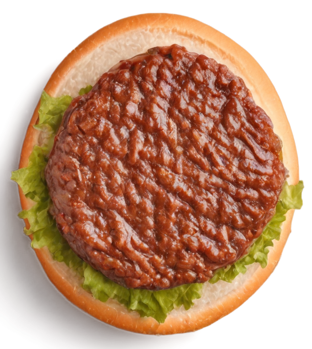

- 
Burguer de Costela
Pão: Australiano
Carne: 200g de costela bovina desfiada
Queijo: Provolone
Toppings: Alface americana, tomate grelhado, picles de pepino
Molho: Barbecue de goiaba
Extra: Crispy de cebola
-
Caprese Burger
Pão: Ciabatta
Carne: 160g de frango grelhado
Queijo: Mussarela de búfala
Toppings: Tomate fresco, folhas de manjericão
Molho: Pesto de manjericão
Extra: Redução de balsâmico
-
Burger Mediterrâneo
Pão: Focaccia de alecrim
Carne: 180g de cordeiro
Queijo: Feta
Toppings: Pepino, tomate seco, alface romana
Molho: Tzatziki
Extra: Azeitonas pretas
-
Burger BBQ
Pão: Pão de milho
Carne: 180g de brisket defumado
Queijo: Cheddar envelhecido
Toppings: Bacon crocante, cebola roxa, picles de jalapeño
Molho: Barbecue caseiro
Extra: Anéis de cebola
-
Burger Vegetariano
Pão: Integral com sementes
Carne: Hambúrguer de grão-de-bico e quinoa
Queijo: Queijo de cabra
Toppings: Abobrinha grelhada, pimentão assado, alface frisée
Molho: Homus
Extra: Guacamole
-
Burger Oriental
Pão: Pão de brioche com gergelim preto
Carne: 160g de carne suína
Queijo: Cream cheese
Toppings: Pepino japonês, cenoura ralada, brotos de feijão
Molho: Molho teriyaki
Extra: Maionese de wasabi